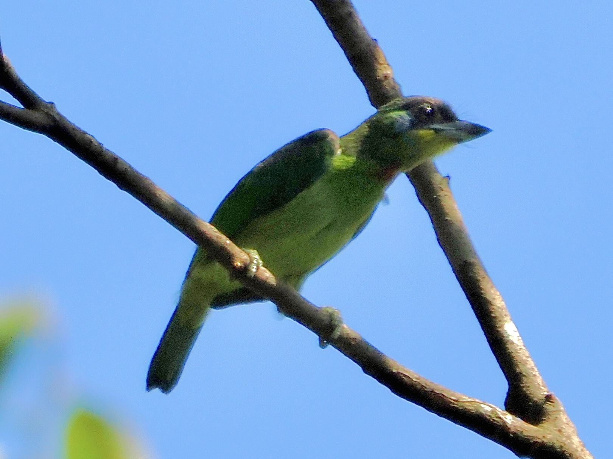
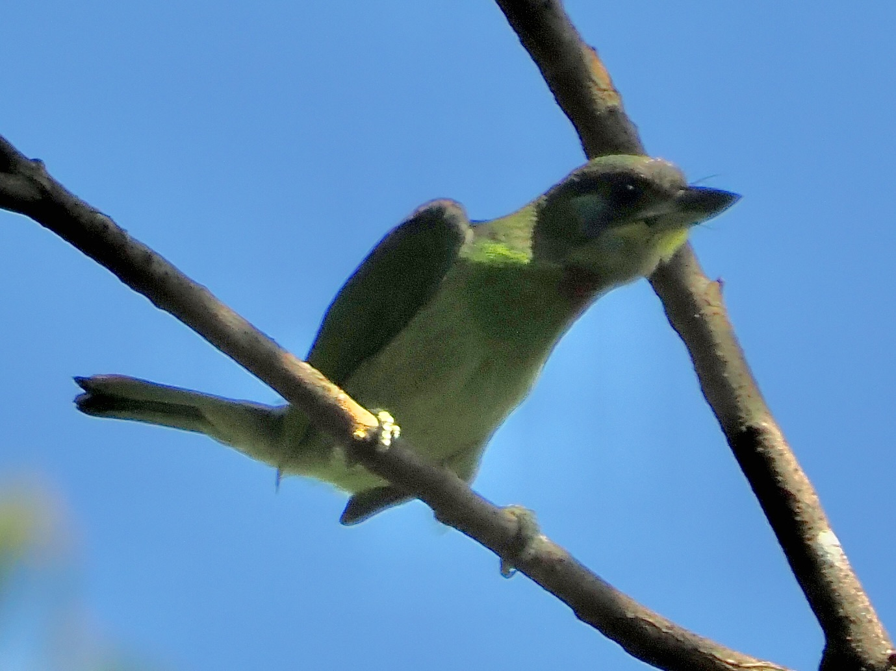

Chinese Barbet
Psilopogon faber
Order: Piciformes
Family: Megalaimidae

A colourful barbet. Body is generally green, with a red crown, black forehead, blue cheeks, yellow throat, and another red patch below the yellow.

Calls rather loudly, often high up in a bare branch. Also has a very expressive tail, which flicks left and right to almost uncomfortable positions.
Sounds
Sounds like wooden fish tapping.